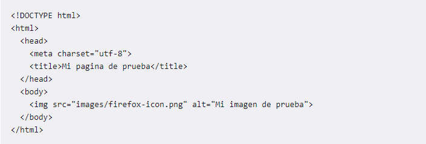

¿Que es?
El Lenguaje de Marcado de Hipertexto (HTML) es el código que se utiliza para estructurar y desplegar una página web y sus contenidos. Por ejemplo, sus contenidos podrían ser párrafos, una lista con viñetas, o imágenes y tablas de datos. Como lo sugiere el título, este artículo te dará una comprensión básica de HTML y cúal es su función.

Partes Principales
La etiqueta de apertura: consiste en el nombre del elemento (en este caso, p), encerrado por paréntesis angulares (< >) de apertura y cierre. Establece dónde comienza o empieza a tener efecto el elemento —en este caso, dónde es el comienzo del párrafo—. La etiqueta de cierre: es igual que la etiqueta de apertura, excepto que incluye una barra de cierre (/) antes del nombre de la etiqueta. Establece dónde termina el elemento —en este caso dónde termina el párrafo—. El contenido: este es el contenido del elemento, que en este caso es sólo texto. El elemento: la etiqueta de apertura, más la etiqueta de cierre, más el contenido equivale al elemento.
Anatomia
Hasta ahora has visto lo básico de elementos HTML individuales, pero estos no son muy útiles por sí solos. Ahora verás cómo los elementos individuales son combinados para formar una página HTML entera. Vuelve a visitar el código de tu ejemplo en index.html (que viste por primera vez en el artículo Manejo de archivos):
Aprender HTML analizando páginas reale
Seleccionando la opción «ver código fuente» en el navegador, se puede ver realmente la información que está recibiendo el navegador web y cómo la está interpretando.Por ejemplo: en Internet Explorer, simplemente hay que desplegar el menú «ver» y luego elegir «código fuente», mientras que en Chrome y Firefox presionar Ctrl+U. De esta forma, se abrirá una pestaña con el código fuente de la página que se esté viendo en ese momento en el navegador. Otra forma más rápida consiste en hacer clic con el botón derecho del ratón en cualquier punto del área donde el navegador muestra la página web y elegir «Ver código fuente de la página».